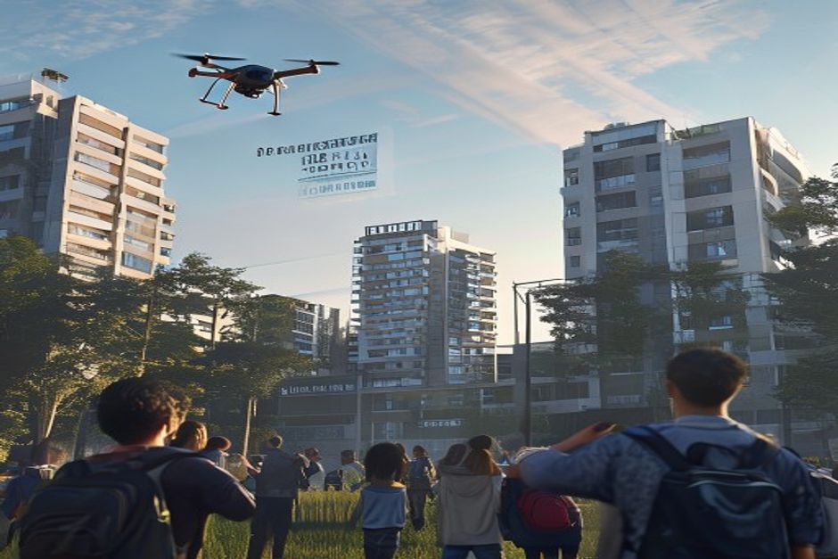
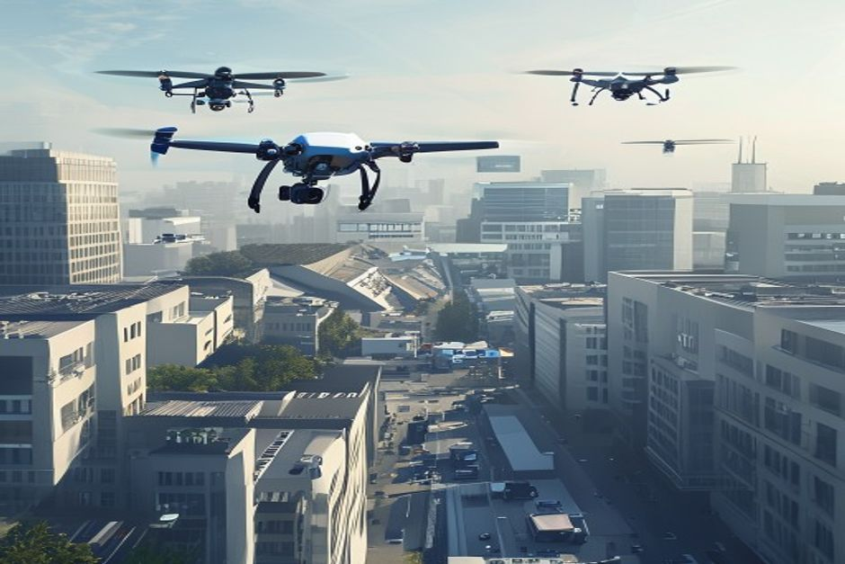

This report synthesizes internal documents and approved supplementary web evidence to formulate a market entry strategy for high-density urban drone deliveries that bypass restricted zones such as schools and events. The primary sources are OmniLogistics' internal memos, surveys, and regulatory updates, which provide the highest-priority facts. Web evidence from FAA and Federal Register publications supplements regulatory context. The analysis focuses on compliance with altitude and weight limits, consumer concerns, and financial projections.
Regulatory Compliance: Altitude, Weight, and Restricted Zones
Strict adherence to altitude limits (150-300 ft), weight cap (25 lbs), and no-fly zones over schools and events is mandatory for urban corridor access.
The regulatory update (doc3_regulatory_update.md) mandates that delivery drones maintain a cruising altitude between 150 and 300 feet, with flight below 150 feet only during VTOL phases. This requires careful route planning to avoid low-altitude operations over restricted zones.
Drones are strictly prohibited from flying over schools during operating hours, major sporting events, and government building security perimeters. To bypass these zones, OmniLogistics must design flight paths that reroute around them, potentially using higher altitudes within the allowed band.
The total takeoff weight cannot exceed 25 lbs (11.3 kg) for unrestricted urban corridor access. The current 'Heavy-Lifter v2' exceeds this by 2.5 lbs when fully loaded, necessitating a fleet mix shift to the 'Swift-Class' drone (18 lbs total weight) for urban centers.
Data retention of flight telemetry and sensor data for a minimum of 90 days is required for incident investigations. This impacts data storage and compliance costs.
Supplementary web evidence from the FAA (2026-08943.pdf) confirms ongoing regulatory evolution, including the FAA Reauthorization Act of 2018 and 2024 amendments expanding restricted facilities. This underscores the need for continuous compliance monitoring.
- [Chunk: 8dc8158d-24e0-4d7a-a793-0a28578d71c8] "Altitude Limits: Delivery drones must maintain a cruising altitude between 150 and 300 feet." — Establishes the operational altitude band.
- [Chunk: 8dc8158d-24e0-4d7a-a793-0a28578d71c8] "Restricted Zones: Drones are strictly prohibited from flying over schools during operating hours, major sporting events, and government building security perimeters." — Defines no-fly zones.
- [Chunk: 8dc8158d-24e0-4d7a-a793-0a28578d71c8] "Weight Limits: The total takeoff weight (drone + payload) cannot exceed 25 lbs (11.3 kg) for unrestricted urban corridor access." — Sets the weight compliance threshold.
- [Chunk: 8dc8158d-24e0-4d7a-a793-0a28578d71c8] "Data Retention: Flight telemetry and sensor data must be retained for a minimum of 90 days." — Mandates data retention period.
The executive case should start with the few numbers the supplementary web record can support
Each headline metric is traceable to a retained supplementary web sources sentence.
Evidence: WEB-E13, WEB-E14, WEB-E15. Sources: precedenceresearch.com.
These values are extracted from supplementary web sources text; they are not model-created scores.
Sources
- WEB-E13 supplementary web $2.70B - The global delivery drone market size accounted for USD 2.70 billion in 2025 and is predicted to increase from USD 3.28 billion in 2026 to approximately USD 18.93 billion by 2035, expanding at a CAGR of 21.50% from. Delivery Drone Market Size to Hit USD 18.93 Billion by 2035
- WEB-E14 supplementary web $3.28B - The global delivery drone market size accounted for USD 2.70 billion in 2025 and is predicted to increase from USD 3.28 billion in 2026 to approximately USD 18.93 billion by 2035, expanding at a CAGR of 21.50% from. Delivery Drone Market Size to Hit USD 18.93 Billion by 2035
- WEB-E15 supplementary web $18.93B - The global delivery drone market size accounted for USD 2.70 billion in 2025 and is predicted to increase from USD 3.28 billion in 2026 to approximately USD 18.93 billion by 2035, expanding at a CAGR of 21.50% from. Delivery Drone Market Size to Hit USD 18.93 Billion by 2035
Consumer Acceptance: Addressing Noise, Privacy, and Safety Concerns
68% of urban residents are comfortable with drone delivery, but noise (42%) and privacy (35%) are primary barriers that must be mitigated.

The consumer survey (doc2_consumer_survey.md) with 5,200 respondents across five global cities shows strong overall acceptance (68% comfortable or very comfortable). However, 42% cite noise pollution as the top concern, 35% worry about privacy from cameras, and 18% fear safety issues.
To address noise, the strategic recommendation is to deploy 'Whisper-Prop' technology, which reduces decibel levels by 40%. This directly targets the top consumer concern and can be a key marketing differentiator.
Privacy concerns can be alleviated by visibly shuttering outward-facing cameras during the final descent phase, as recommended in the survey document. This reassures customers that their property is not being recorded.
Safety fears (18%) can be mitigated through transparent communication about redundant systems, emergency procedures, and the 90-day data retention policy that enables thorough incident investigations.
55% of users are willing to pay a premium of up to $2.50 for drone delivery if it guarantees arrival within 30 minutes. This pricing insight supports a premium service tier.
- [Chunk: a0b1d49e-38b1-44ee-ada8-d097304c6f33] "Overall Acceptance: 68% of respondents indicated they are 'comfortable' or 'very comfortable' receiving small packages via drone." — Baseline acceptance rate.
- [Chunk: a0b1d49e-38b1-44ee-ada8-d097304c6f33] "Noise Pollution: 42% cited the buzzing sound of drones as their top concern." — Identifies primary barrier.
- [Chunk: a0b1d49e-38b1-44ee-ada8-d097304c6f33] "Privacy: 35% were worried about cameras on drones recording private property." — Second major concern.
- [Chunk: a0b1d49e-38b1-44ee-ada8-d097304c6f33] "Safety: 18% expressed fear of packages being dropped or drones malfunctioning over crowded areas." — Third concern.
Financial Viability: Cost Reduction and Break-Even Analysis
Project SkyNet is projected to reduce last-mile delivery costs by 35% to $2.66 per package by Q4 2027, with an 18-month break-even at 150,000 daily deliveries.
The financial memo (doc1_financial_memo.md) allocates $45.5 million in capital expenditure for Project SkyNet, a 25% increase from initial Q1 projections due to faster-than-expected advancements in obstacle avoidance systems.
The budget breakdown includes $22.0M for hardware (drones and hubs), $12.5M for software and AI development, $4.5M for regulatory compliance and licensing, $3.0M for marketing and PR, and $3.5M contingency.
Cost projections show a reduction from $4.10 per package to $2.66 by Q4 2027, a 35% decrease. This is driven by automation and scale.
The break-even point is estimated at 18 months post-launch, assuming a minimum daily delivery volume of 150,000 packages across the top 5 urban markets. This volume target is critical for financial viability.
The 55% consumer willingness to pay a $2.50 premium for 30-minute delivery supports a revenue model that can accelerate break-even.
- [Chunk: dfe35bb5-0eda-4a50-8180-aacb83f79cbd] "OmniLogistics is allocating $45.5 million in capital expenditure for 'Project SkyNet,' our autonomous drone delivery initiative in urban centers." — Total capex.
- [Chunk: dfe35bb5-0eda-4a50-8180-aacb83f79cbd] "This represents a 25% increase from our initial Q1 projections due to faster-than-expected technological advancements in obstacle avoidance systems." — Capex increase reason.
- [Chunk: dfe35bb5-0eda-4a50-8180-aacb83f79cbd] "We project that by Q4 2027, Project SkyNet will reduce last-mile delivery costs by 35% (from $4.10 per package to $2.66)." — Cost reduction projection.
- [Chunk: dfe35bb5-0eda-4a50-8180-aacb83f79cbd] "The break-even point for this capital investment is estimated at 18 months post-launch, assuming a minimum daily delivery volume of 150,000 packages across our top 5 urban markets." — Break-even conditions.
Operational Strategy: Fleet Mix and Route Planning to Bypass Restricted Zones
A dual-fleet strategy using Swift-Class drones for urban cores and Heavy-Lifter v2 for suburban routes, combined with dynamic route planning, ensures compliance and efficiency.

The regulatory update mandates that drones cannot fly over schools during operating hours, major sporting events, and government building perimeters. To bypass these zones, OmniLogistics must implement dynamic route planning that recalculates paths in real-time based on time-of-day restrictions and event schedules.
The fleet mix must prioritize Swift-Class drones (18 lbs) for urban centers to comply with the 25 lbs weight limit. Heavy-Lifter v2 drones, which exceed the limit by 2.5 lbs when fully loaded, should be redeployed to suburban or less restricted areas where weight limits may be more lenient or where corridor access is not required.
Engineering has been notified to modify payload capacity limits in dispatch software to prevent overweight assignments. This software update is critical for compliance.
Altitude management is key: cruising at 150-300 feet, with VTOL phases below 150 feet only at designated hubs away from restricted zones. Hubs should be located outside school and event perimeters.
Supplementary web evidence (WEB-E5) indicates a 60-day comment period for new FAA rules, suggesting that OmniLogistics should actively participate in rulemaking to shape favorable regulations.
- [Chunk: 8dc8158d-24e0-4d7a-a793-0a28578d71c8] "Drones are strictly prohibited from flying over schools during operating hours, major sporting events, and government building security perimeters." — Defines restricted zones.
- [Chunk: 8dc8158d-24e0-4d7a-a793-0a28578d71c8] "prioritizing the 'Swift-Class' drones (total weight 18 lbs) for urban centers to ensure compliance." — Fleet mix recommendation.
- [Chunk: 8dc8158d-24e0-4d7a-a793-0a28578d71c8] "The Engineering team has been notified to modify the payload capacity limits in our dispatch software." — Software update action.
- [Chunk: 8dc8158d-24e0-4d7a-a793-0a28578d71c8] "Altitude Limits: Delivery drones must maintain a cruising altitude between 150 and 300 feet." — Altitude constraints.
Risk Mitigation: Data Retention, Incident Response, and Public Trust
90-day data retention and transparent incident response protocols are essential for regulatory compliance and building public trust.
The regulatory update requires flight telemetry and sensor data to be retained for a minimum of 90 days. This supports incident investigations and demonstrates accountability.
OmniLogistics must establish a secure data storage system with access controls to ensure data integrity and privacy. The 90-day retention period should be communicated to consumers to build trust.
In the event of an incident (e.g., package drop or malfunction), the retained data can be used to quickly identify causes and implement corrective actions. This aligns with the 18% safety concern among consumers.
Public trust can be further enhanced by publishing anonymized safety reports and engaging with community stakeholders. The marketing budget ($3.0M) can fund these initiatives.
Supplementary web evidence (WEB-E8) from the FAA Aeronautical Information Manual (effective January 22, 2026) indicates ongoing updates to air traffic procedures, which may affect drone operations. OmniLogistics should monitor these changes.
- [Chunk: 8dc8158d-24e0-4d7a-a793-0a28578d71c8] "Data Retention: Flight telemetry and sensor data must be retained for a minimum of 90 days to assist in any incident investigations." — Data retention mandate.
- [Chunk: a0b1d49e-38b1-44ee-ada8-d097304c6f33] "Safety: 18% expressed fear of packages being dropped or drones malfunctioning over crowded areas." — Consumer safety concern.
- [Chunk: dfe35bb5-0eda-4a50-8180-aacb83f79cbd] "Marketing & Public Relations: $3.0M" — Budget for trust-building activities.
- Supplementary web evidence: WEB-E8 (AIM Change 2 dated January 22, 2026) from FAA.gov indicates evolving air traffic procedures.